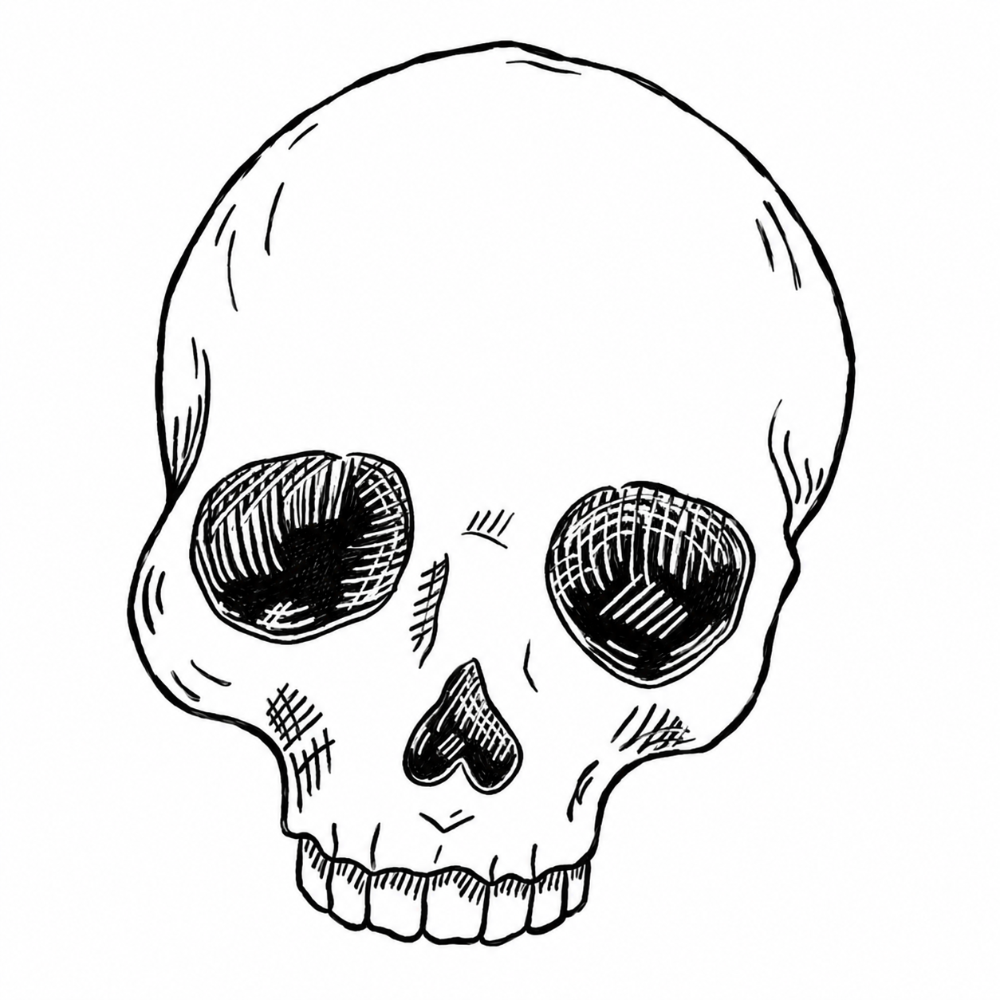

Palaeontological heritage · Conservation-restoration
From taphonomic processes to conservation decisions.
The Taphonomic Model for Conservation (MTC) is a tool that supports conservation-restoration diagnosis of Pleistocene bone remains.
Explore the model
01 / The model
Interpreting alteration to guide conservation.
MTC organises information through a hierarchical sequence that connects the context of the find and observable alterations with taphonomic variables and trajectories, the functional stability of the fossil and conservation-restoration needs.
Observed evidence → taphonomic interpretation → assessment of stability and risk → conservation-restoration needs.
Artificial intelligence serves as a tool for executing the methodological architecture previously defined in MTC. Its implementation in ChatGPT uses specific protocols, validation rules and traceability mechanisms to support expert review throughout the diagnostic process.
02 / How it works
A sequential workflow, from N0 to N6.
The analysis is organised into seven consecutive levels. Each level must be completed before proceeding, maintaining the relationship between context, the evidence provided and diagnostic interpretation.
- N0
- N1
- N2
- N3
- N4
- N5
- N6
To begin, open MTC in ChatGPT and enter: “I want to initiate a diagnosis using the MTC”. The assistant will ask for your language and a case identifier in the format MTC-[SITE]-[IDENTIFIER].
At N6, the functional assessment translates the validated information into conservation criteria. It generates two complementary outputs: a complete taphonomic diagnosis (L6-DIAG) and an overall conservation record (L6-FC), linking technical decisions to the evidence on which they are based.
03 / Scope
Supporting professional analysis.
MTC is an initial operational version developed as a minimum viable product (MVP). Its application in the thesis is limited to Pleistocene bone remains in the contexts studied. Extending it to other assemblages and contexts requires further testing and validation.
The thesis reports an initial retrospective methodological and operational validation in assemblages from five Pleistocene sites in the Iberian Peninsula, comparing MTC diagnoses with previously documented conservation-restoration interventions. This evaluation does not, by itself, validate the current plugin implementation.
The diagnostic process remains subject to expert review. Observed evidence, taphonomic inferences, risks of deterioration and technical conservation decisions must remain distinguishable.
04 / Author
Development and research.
Almudena S. Yagüe
Conservator-restorer specialising in archaeological and palaeontological heritage. She works as a conservation and restoration technician at the ICP.
She holds a degree in Fine Arts, a master’s degree in Curating Art and New Media, and an Expert qualification in Advanced Technologies for the Dissemination and Enhancement of Cultural Heritage from UNED.
Her doctoral thesis, recently submitted to the University of Barcelona, develops an AI-based diagnostic system for the conservation of Pleistocene bone remains.
ORCID · 0000-0002-4051-0043 ↗05 / Access
MTC in ChatGPT.
The plugin provides access to the model’s implementation in ChatGPT.
View plugin in ChatGPT ↗Access depends on plugin availability and the options included in your ChatGPT account. This page presents the project; diagnosis takes place within ChatGPT.